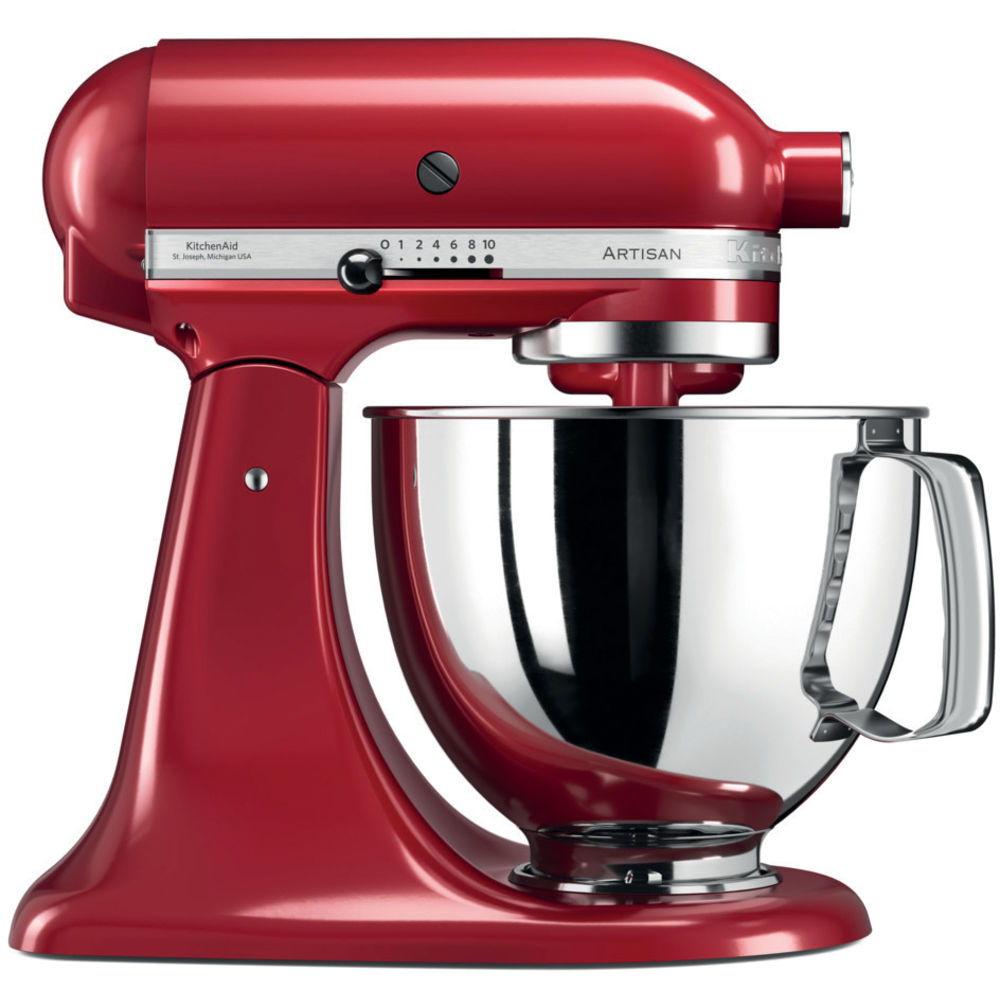
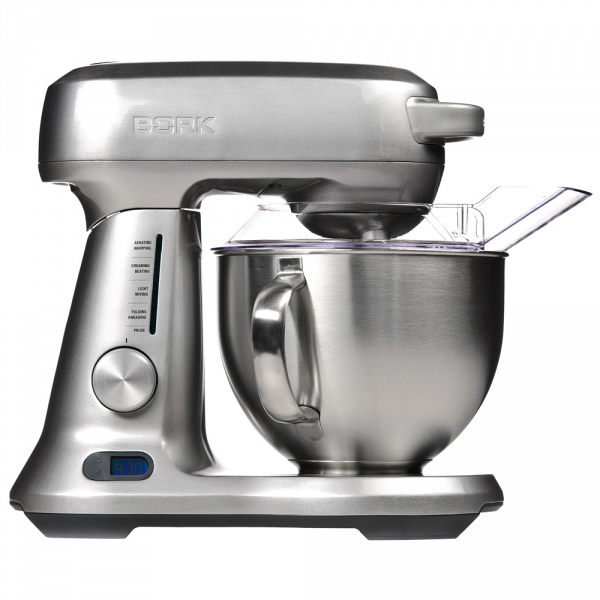

Миксер стационарный BORK B810 VS KitchenAid 5KSM125/5KSM175
Современная техника отличается от ретро тем, что экономит самое ценное на сегодняшний день – время. Ретро дизайн - это на любителя, а вот ретро технологии это вчерашний, а быть может и позавчерашний день.
KitchenAid 5KSM125/5KSM175
Преимущества KitchenAid, которые пытаются продать:
- Дизайн и выбор цветов
- Страна производства США
- Срок гарантии 5 лет
- Компания, которая изобрела миксеры в 1919 году
- KitchenAid переводится, как кухонный помощник
- Целььнометалический корпус предотвращает вибрацию во время работы
- Возможность установки дополнительных насадок в передней части миксера
Характеристики KitchenAid:
- Потребляемая мощность: 300 Вт
- Объём чаши: 4,83 л
- Количество скоростей: 10
- Скорость вращения насадки: 58 – 220 об/мин
- Тип управления механическое
- Стоимость дополнительных насадок:
- Нарезка спиралью: 13990 руб.
- Кухонный комбайн: 19990 руб.
- Шнековая соковыжималка: 19990 руб.
- Мясорубка: 7490 руб.
- Протирка фруктов и овощей: 7990 руб.
- Мельница для зерновых: 19990 руб.
- Овощерезка: 9990 руб.
- Раскатка теста: 8690 руб.
- Приготовление пасты: 15990 руб.
- Приготовление макарон: 18490 руб.
- Приготовление равиоли: 15990 руб.
- Соковыжималка для цитрусовых: 4390 руб.
- Мороженица: 9990 руб.
Примечание: Цена насадок высокая, при этом, они значительно уступают в качестве переработки продуктов, в первую очередь, из-за несовместимости оборотов двигателя миксера и назначения насадок.
Преимущества миксера BORK В810:
- Современный тип управления (дисплей, светодиодная индикация скорости работы, электронный шатл, индикация перегрузки и перегрева) обеспечит комфорт при пользовании миксером
- Наличие функции таймера освобождает пользователя от контроля процесса приготовления. Пока миксер выполняет сложную работу, вы используете время по своему усмотрению
- 12 скоростей обеспечивают плавный переход между режимами перемешивания, как следствие, возможность добиться правильной консистенции
- Широкий диапазон оборотов миксера (47-240 обмин) обеспечит: максимальный крутящий момент на низких оборотах для замешивания самого плотного теста, быструю скорость обработки на высоких оборотах при взбивании или насыщении продукта кислородом
- Более лёгкое обслуживание: все съёмные части можно мыть в посудомоечной машине (венчик KitchenAid нельзя мыть в посудомоечной машине)
- Максимальное время работы миксера BORK под нагрузкой 1 час, миксера KitchenAid 10 минут
- Максимальная безопасность при работе с миксером обеспечивается блокировкой включения при поднятой рабочей части
- Продуманная конструкция не требует регулировки расстояния от насадки до чаши
- Реальная цена отличного продукта
Покупая KitchenAid, вы покупаете не только ретро дизайн, но и ретро технологии.